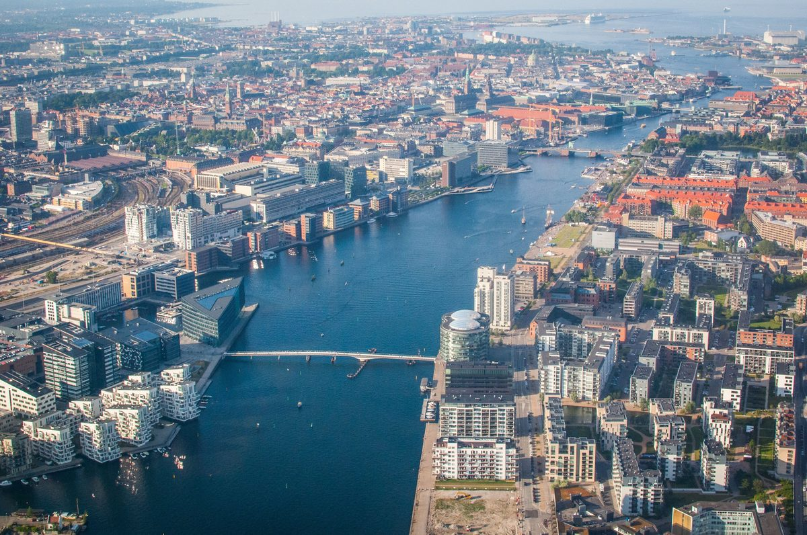
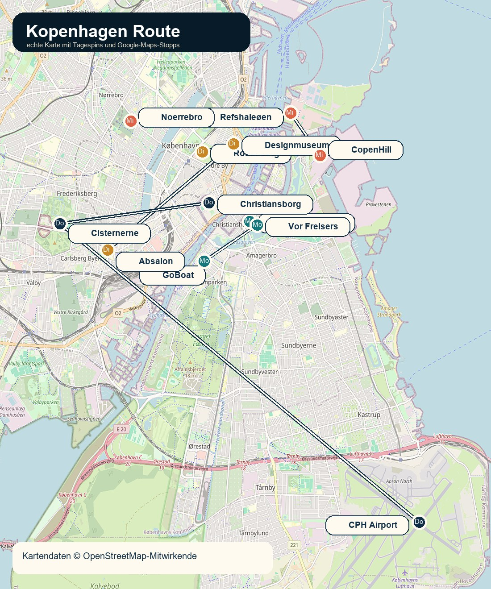
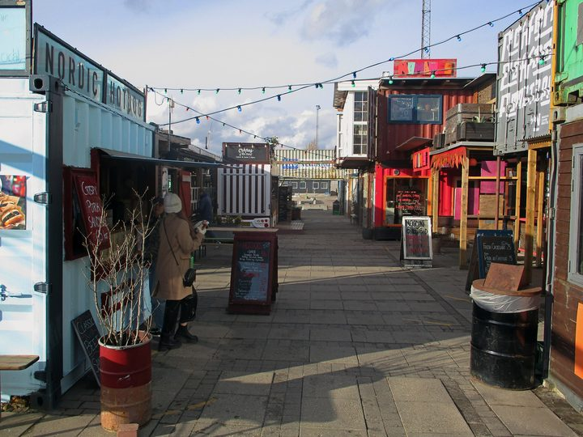
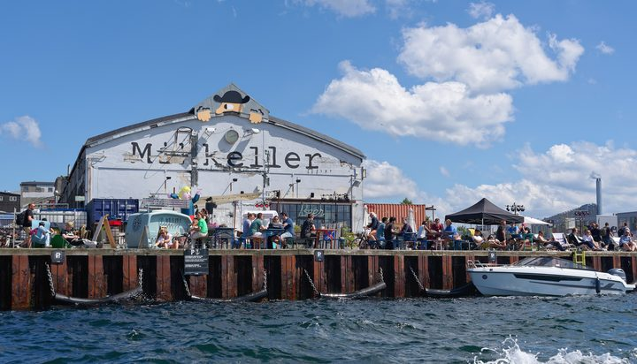

06.-09. Juli 2026 · Christian & Silke
Kopenhagen mobil
Ein besserer Reiseplan fürs Handy: große Bilder, klare Tageslogik, Wetterentscheidungen, Route und kurze Erklärungen zu den Orten.
Leselogik
Nicht nur Ablauf, sondern Reisegefühl.
Der Plan nutzt Christianshavn als ruhigen Anker, setzt Klassiker gezielt ein und lässt am dritten Tag Kopenhagens moderne Hafenseite wirken. Alles ist so sortiert, dass ihr unterwegs schnell entscheiden könnt: machen, tauschen oder kürzen.
Aktuelle Prognose
Wetterfenster für die Route
Die Daten werden beim Öffnen live für Kopenhagen geladen. Falls der Abruf scheitert, bleibt eine sichere Fallback-Prognose sichtbar.
Landkarte
Schöne Routenkarte fürs Handy
Echte Kartenbasis mit Tagespins, Wasser, Stadtteilen und den langen Sprüngen zum Flughafen. Die einzelnen Stops öffnen zusätzlich direkt in Google Maps.

Tagespläne
Vier Tage, mobil lesbar
Attraktionen
Warum diese Orte drin sind


Essen
Gastro-Route statt Touristenfalle
Jeder Essensstopp hat eine Aufgabe: ankommen, lokal werden, Wasser spüren oder sauber abschließen.
Quellen
Recherche und Bilder
Faktenquellen: offizielle Seiten von Vor Frelsers Kirke, Rosenborg, Rundetårn, Designmuseum Danmark, CopenHill, GoBoat, Cisternerne, Reffen und VisitCopenhagen. Wetter: live über Open-Meteo im Browser. Bilder: Wikimedia Commons und ein offizielles Frederiksbergmuseerne-Motiv für Cisternerne.